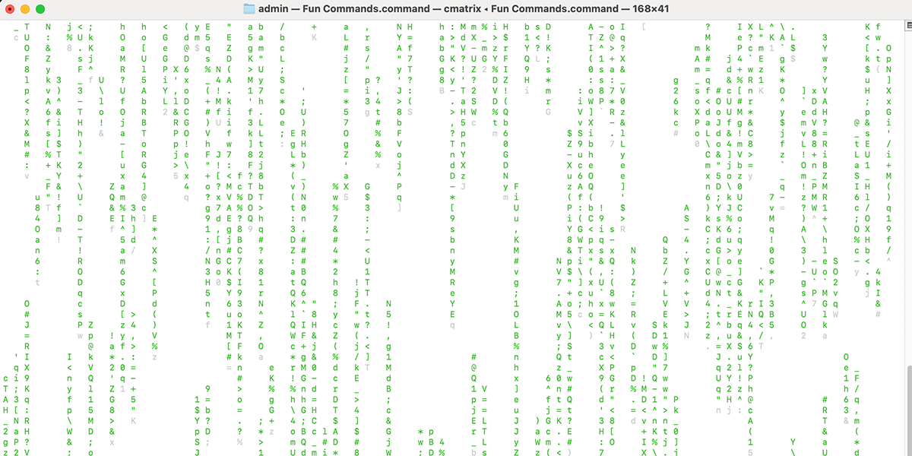

Games
Launches Emacs so its built-in games can be used; Emacs is installed through Homebrew only when this option needs it.
Interactive Terminal Menu
Fun Commands is a Terminal menu of visual effects, ASCII utilities, classic command-line toys, historical lookups, text-to-speech, and other lightweight entertainment features.
Installation
The Melding Software homepage provides this Terminal installer command:
Because this command downloads and immediately runs a shell installer, you can review install.sh in the GitHub repository before executing it. Individual scripts may also request permissions, administrator access, Keychain authorization, Full Disk Access, or other macOS approvals depending on what the selected tool needs.
Documentation
Launches Emacs so its built-in games can be used; Emacs is installed through Homebrew only when this option needs it.
Runs cmatrix when available.
Uses a Ruby terminal animation when available, with a Python fallback.
Uses netcat to connect to a public ASCII Star Wars service, with a fallback path when the classic service is unavailable.
Runs the sl command.
Uses fortune.
Uses figlet to turn entered text into terminal banner art.
Uses a built-in month mapping and does not require an online lookup.
Searches the local macOS calendar.history file by keyword or MM/DD when that system data exists.
Passes user-entered text to cowsay.
Uses macOS's built-in say command.
Documentation
The script checks /opt/homebrew and /usr/local so Homebrew can be found on both common architectures.
If Homebrew is missing, the current script invokes Homebrew's official installer with curl.
It can install cmatrix, sl, cowsay, fortune/fortune-mod, and figlet as needed.
Documentation
Choosing Exit ends the script without forcibly closing Terminal windows.
The script is designed so Ctrl+C can stop a running toy without necessarily terminating the overall menu.
When optional commands are unavailable, the menu reports the problem and returns rather than silently failing.
Screenshot

FAQ
It can install Homebrew and selected command-line dependencies when they are not already available.
No. Several features are local, but Homebrew installs and ASCII Star Wars can require internet access.
Yes. The Let Your Terminal Speak option uses the built-in macOS say command.
Choose option 0 from the menu.